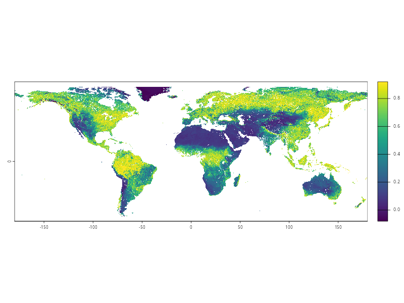

Introduction
The Normalized Difference Vegetation Index (NDVI) is a indicator that quantifies vegetation cover and health by measuring the difference between near-infrared (strongly reflected by healthy plants) and red light (absorbed by chlorophyll). Its has the ability to capture environmental conditions that influence disease dynamics, nutrition, and overall well-being. For example, NDVI helps identify areas at risk of vector-borne diseases such as malaria, dengue, and leishmaniasis, since vegetation cover and humidity create favorable habitats for vectors like mosquitoes and sandflies. NDVI also supports urban health research by assessing the distribution of green spaces, which are linked to reduced air pollution exposure, better mental health, and mitigation of heat stress.
I created this dataset with NDVI averages for Brazilian municipalities using a zonal statistics procedure with data available from the Copernicus Land Monitoring Service .
Source data
The following source data were used.
From January 1, 1999 to December 31, 2019, raster data with 1km spatial resolution was used (NDVI 1999-2020 (raster 1 km), global, 10-daily – version 3 ).
From January 1, 2020 to June 30, 2020, raster data with 300m spatial resolution was used (NDVI 2014-2020 (raster 300 m), global, 10-daily – version 1 ).
From July 1, 2020, raster data with 300m spatial resolution was used (NDVI 2020-present (raster 300 m), global, 10-daily – version 2 ).
Methods
First, the available data for each month was averaged, generating monthly NDVI files. Then, for each month, the following zonal statistics were computed for each Brazilian municipality: mean, maximum value, minimum value, standard variation.
The R scripts for download, processing and export data are available here .
Download
1999-2024:
2025:
Data example
library (dplyr)library (zendown)library (arrow)library (ggplot2)zen_file (deposit_id = 17093199 , file_name = "ndvi_mean.parquet" ) |> open_dataset () |> filter (code_muni == 2510808 ) |> collect () |> ggplot (aes (x = date, y = value)) + geom_line () + ylim (0 , 1 ) + labs (title = "Monthly average NDVI" , subtitle = "Patos, PB" ) + theme_bw ()zen_file (deposit_id = 18329383 , file_name = "ndvi_mean.parquet" ) |> open_dataset () |> filter (code_muni == 2312908 ) |> collect () |> ggplot (aes (x = date, y = value)) + geom_line () + ylim (0 , 1 ) + labs (title = "Monthly average NDVI" , subtitle = "Sobral, CE" ) + theme_bw ()
Session info
:: session_info ()
─ Session info ───────────────────────────────────────────────────────────────
setting value
version R version 4.3.3 (2024-02-29)
os Ubuntu 24.04.3 LTS
system x86_64, linux-gnu
ui X11
language (EN)
collate en_US.UTF-8
ctype pt_BR.UTF-8
tz America/Sao_Paulo
date 2026-01-21
pandoc 3.6.3 @ /usr/share/positron/resources/app/quarto/bin/tools/x86_64/ (via rmarkdown)
quarto 1.8.26 @ /opt/quarto/bin/quarto
─ Packages ───────────────────────────────────────────────────────────────────
package * version date (UTC) lib source
arrow * 22.0.0.1 2025-12-23 [1] CRAN (R 4.3.3)
assertthat 0.2.1 2019-03-21 [1] CRAN (R 4.3.3)
backports 1.5.0 2024-05-23 [1] CRAN (R 4.3.3)
bit 4.6.0 2025-03-06 [1] CRAN (R 4.3.3)
bit64 4.6.0-1 2025-01-16 [1] CRAN (R 4.3.3)
checkmate 2.3.3 2025-08-18 [1] CRAN (R 4.3.3)
cli 3.6.5 2025-04-23 [1] CRAN (R 4.3.3)
dichromat 2.0-0.1 2022-05-02 [1] CRAN (R 4.3.3)
digest 0.6.39 2025-11-19 [1] CRAN (R 4.3.3)
dplyr * 1.1.4 2023-11-17 [1] CRAN (R 4.3.3)
evaluate 1.0.5 2025-08-27 [1] CRAN (R 4.3.3)
farver 2.1.2 2024-05-13 [1] CRAN (R 4.3.3)
fastmap 1.2.0 2024-05-15 [1] CRAN (R 4.3.3)
fs 1.6.6 2025-04-12 [1] CRAN (R 4.3.3)
generics 0.1.4 2025-05-09 [1] CRAN (R 4.3.3)
ggplot2 * 4.0.1 2025-11-14 [1] CRAN (R 4.3.3)
glue 1.8.0 2024-09-30 [1] CRAN (R 4.3.3)
gtable 0.3.6 2024-10-25 [1] CRAN (R 4.3.3)
htmltools 0.5.9 2025-12-04 [1] CRAN (R 4.3.3)
htmlwidgets 1.6.4 2023-12-06 [1] CRAN (R 4.3.3)
jsonlite 2.0.0 2025-03-27 [1] CRAN (R 4.3.3)
knitr 1.51 2025-12-20 [1] CRAN (R 4.3.3)
labeling 0.4.3 2023-08-29 [1] CRAN (R 4.3.3)
lifecycle 1.0.5 2026-01-08 [1] CRAN (R 4.3.3)
magrittr 2.0.4 2025-09-12 [1] CRAN (R 4.3.3)
otel 0.2.0 2025-08-29 [1] CRAN (R 4.3.3)
pillar 1.11.1 2025-09-17 [1] CRAN (R 4.3.3)
pkgconfig 2.0.3 2019-09-22 [1] CRAN (R 4.3.3)
purrr 1.2.1 2026-01-09 [1] CRAN (R 4.3.3)
R6 2.6.1 2025-02-15 [1] CRAN (R 4.3.3)
RColorBrewer 1.1-3 2022-04-03 [1] CRAN (R 4.3.3)
rlang 1.1.7 2026-01-09 [1] CRAN (R 4.3.3)
rmarkdown 2.30 2025-09-28 [1] CRAN (R 4.3.3)
S7 0.2.1 2025-11-14 [1] CRAN (R 4.3.3)
scales 1.4.0 2025-04-24 [1] CRAN (R 4.3.3)
sessioninfo 1.2.3 2025-02-05 [1] CRAN (R 4.3.3)
tibble 3.3.1 2026-01-11 [1] CRAN (R 4.3.3)
tidyselect 1.2.1 2024-03-11 [1] CRAN (R 4.3.3)
vctrs 0.7.0 2026-01-16 [1] CRAN (R 4.3.3)
withr 3.0.2 2024-10-28 [1] CRAN (R 4.3.3)
xfun 0.56 2026-01-18 [1] CRAN (R 4.3.3)
yaml 2.3.12 2025-12-10 [1] CRAN (R 4.3.3)
zendown * 0.1.0 2024-05-21 [1] CRAN (R 4.3.3)
[1] /home/raphaelsaldanha/R/x86_64-pc-linux-gnu-library/4.3
[2] /usr/local/lib/R/site-library
[3] /usr/lib/R/site-library
[4] /usr/lib/R/library
* ── Packages attached to the search path.
──────────────────────────────────────────────────────────────────────────────